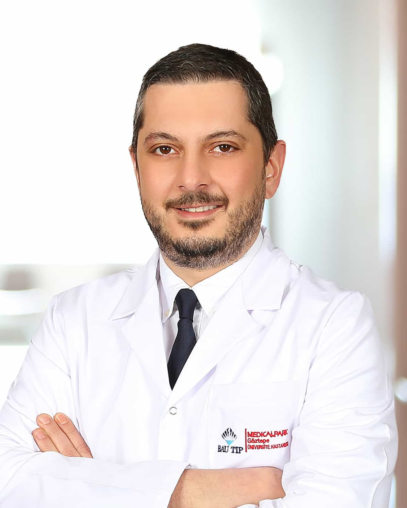

Prostat Hastalıkları
HoLEP Ameliyatı: Prostat Büyümesinde Lazerle Soyma
Büyümüş prostat dokusunun holmiyum lazerle, karında kesi açmadan çıkarıldığı kapalı ameliyat. Bu rehber ameliyatın kimlere uygun olduğunu, ameliyat gününü ve sonrasını anlatır.
Üroloji Profesörü · Medical Park Göztepe Hastanesi
Prostat büyümesi, ürolojik kanserler, laparoskopik cerrahi ve böbrek taşı konularında hekim tarafından hazırlanmış 24 rehber, muayene yeri bilgileri ve akademik çalışmalar.

Üroloji Profesörü
Prof. Dr. Kaan Gökçen, üroloji uzmanıdır. Prostat büyümesinde holmiyum lazer enükleasyonu (HoLEP), böbrek, mesane, prostat ve testis kanserlerinde cerrahi tedavi, laparoskopik ürolojik cerrahi ve böbrek taşı tedavileriyle ilgilenmektedir. Hastalarını Medical Park Göztepe Hastanesi'nde kabul eder.
Kaan Gökçen tıp eğitimini Gazi Üniversitesi Tıp Fakültesi'nde tamamladı. Üroloji uzmanlık eğitimini 2007-2012 yılları arasında Uludağ Üniversitesi Tıp Fakültesi Üroloji Anabilim Dalı'nda aldı. Bu dönemde laparoskopik radikal sistektomi, laparoskopik adrenalektomi ve retrograd intrarenal cerrahi serilerini konu alan çalışmalarda yer aldı.
Altı alanda 24 rehber: hastalığın ne olduğu, tanı adımları, tedavi seçenekleri ve iyileşme süreci.
Prostat büyümesi, işeme şikâyetleri ve HoLEP başta olmak üzere tedavi seçenekleri.
Karında büyük kesi açmadan, küçük deliklerden kamerayla yapılan ürolojik ameliyatlar.
Kadın ve erkekte idrar kaçırma, aşırı aktif mesane ve gece idrara kalkma.
Prostat, böbrek, mesane, testis ve böbreküstü bezi tümörlerinde tanı ve cerrahi tedavi.
Taşın boyutu ve yerine göre ilaç, şok dalgası ve kapalı lazer yöntemleri; yeniden oluşumu önleme.
İnmemiş testis, hipospadias, reflü ve gece altını ıslatma gibi çocukluk çağı sorunları.
Laparoskopik ürolojik cerrahi, taş hastalığı ve ürolojik onkoloji üzerine ulusal ve uluslararası yayınlar, kongre sunumları ve eğitmenlik.
Kaynak: YÖK Akademik ve Google Scholar, Ekim 2026.
Prostat Hastalıkları
Büyümüş prostat dokusunun holmiyum lazerle, karında kesi açmadan çıkarıldığı kapalı ameliyat. Bu rehber ameliyatın kimlere uygun olduğunu, ameliyat gününü ve sonrasını anlatır.
Ürolojik Kanserler
Yüksek PSA sonucunun anlamı, tekrar ölçüm, MR ve biyopsi kararı.
Böbrek ve Üreter Taşları
Taşın boyutu ve yerine göre ilaç, şok dalgası ya da kapalı lazer seçenekleri.
Ürolojik Kanserler
Gözle görülen ya da tahlilde çıkan kanın nedenleri, tetkikleri ve acil durumlar.